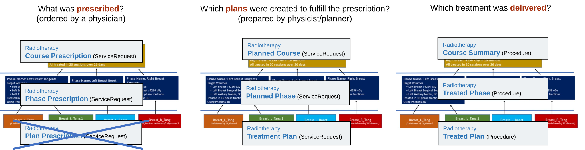
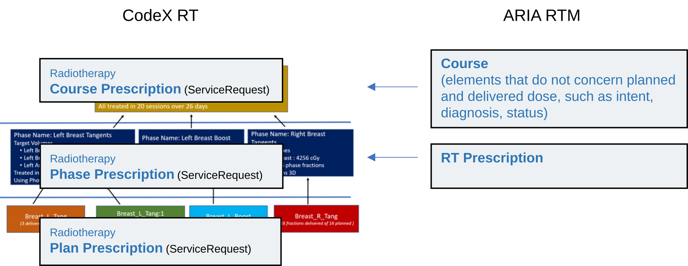
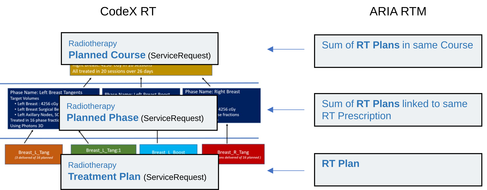
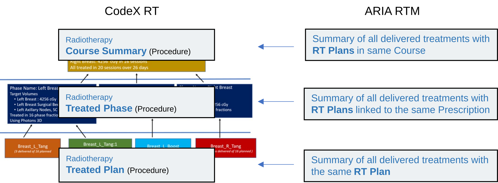
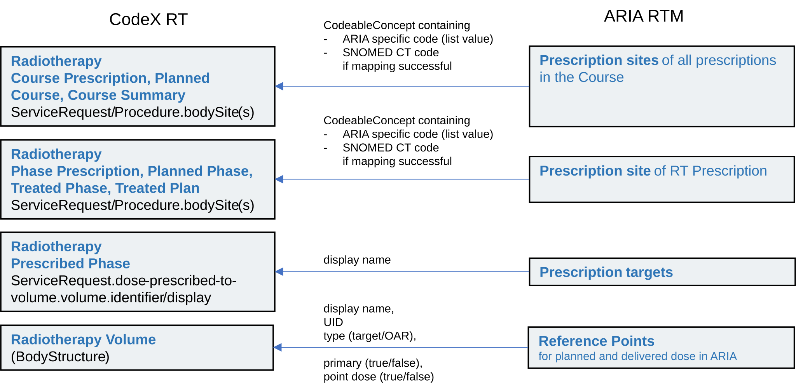

ARIA API Profile Implementation Guide
1.0.0 - R4 Release
ARIA API Profile Implementation Guide
1.0.0 - R4 Release
ARIA API Profile Implementation Guide - Local Development build (v1.0.0). See the Directory of published versions
This page describes how radiotherapy (RT) data is exposed from ARIA in FHIR format. It follows the
which is based on the radiotherapy contents of the
The treatment summaries comply to the (IHE-RO) Exchange of Radiotherapy Summaries (XRTS) Supplement. ARIA covers the role of a combined Treatment Summary Provider and RO Repository actor with the limitation that it does not support treatment summaries from other systems. Treatment Observer actors can read RT summaries from ARIA, but only for summaries that ARIA itself has produced.
The detailed data model of mCODE and CodeX RT and mapping to FHIR resources is described in the respective IGs.
mCODE narrative on Course Summary and related concepts in mCODE STU 2.1
To understand the mapping form ARIA, it is important to become familiar with these CodeX RT profiles.

The profiles describe what is prescribed (left column), what is planned (middle column) and what is delivered (right column) at different levels of detail.
The level of detail ranges from single plans (lower row), to summary over a phase (middle row) to summary over a complete course (upper row).
Not shown in this figure is the Resource profile for Radiotherapy Volumes based on the Resource type BodyStructure, which represents the Target Volumes to which these ServiceRequest and Procedure profiles prescribe dose, plan dose, and record delivered dose.
In this model, ARIA does not support Plan Prescriptions. As RT Prescriptions in ARIA can generally cover more than one plan, all ARIA RT Prescriptions are exposed as Phase Prescriptions, even though in practice some ARIA prescriptions may cover only a single plan. However, additional plans could be linked anytime to a prescription and thus the mapping to Phase Prescription is indicated.
All elements containing physical dose have unit cGy as per mCODE and CodeX RT specifications.
Even if ARIA is configured to display dose in Gy, the dose values exposed in the CodeX RT and mCODE extensions are in cGy.
Courses in ARIA are mapped to courses in mCODE. mCODE requires a course to cover all treatments from first delivery of radiation until all body sites in need of radiation have been treated (mCODE Glossary). ARIA does not prevent the user to assign courses to shorter episodes of care than foreseen by mCODE. For example, separate courses can be created for separate treatment sites and can be treated in parallel. In this case, ARIA exposes separate courses also in ARIA API. To match the mCODE definition of a course, the courses have to be created and used in ARIA accordingly.
While the course is one object in ARIA, the various aspects of a course are covered in multiple CodeX RT profiles. For example, the aspects defined during prescription such as the treatment intent the relation to diagnoses are available in the Course Prescription profile. The summary of planned dose over a course is covered in the Planned Course Profile, and the summary of delivered dose over a course is covered in the Course Summary Profile. Some aspects such as course identifier, course status, or treatment intent, are repeated in all three course level profiles.
In ARIA, the treatment intent, such as curative or palliative, is defined per course. The treatment intent can be set or changed in the Plan Parameters workspace or External Beam Planning.
The treatment intent of the course is exposed with the respective mCODE extension in the Course Prescription, Planned Course, and Course Summary as defined in CodeX RT and mCODE. ARIA exposes the treatment intent also in Phase Prescription and Planned Phase Resources, although not required by the respective CodeX RT profiles.
In ARIA, the treatment intent is selected from a user editable list. The intent values currently configured in ARIA can be queried as ValueSet
http://varian.com/fhir/CodeSystem/radiotherapy-therapeutic-intent
On FHIR, ARIA provides the treatment intent using those configured values. Additionally, ARIA tries to map the values to the SNOMED CT codes defined in mCODE. If this mapping is successful, the SNOMED CT code is exposed in addition to the ARIA specific code.
ARIA supports one or multiple diagnoses per course. The diagnoses selected for a course are exposed in all radiotherapy resources as code (element reasonCode) and as reference to a Condition resource that represents the diagnosis (element reasonReference).
Diagnoses can be linked to courses in the Plan Parameters workspace or in External Beam Planning.
The preferred coding of CodeX RT and mCODE is ICD-10. ARIA supports other coding schemes that may be used instead of ICD-10 or in parallel to ICD-10. If more than one diagnosis code is assigned, ARIA exposes all assigned diagnosis codes.
Note that the performedPeriod.start/end dates and times exposed in ARIA API Procedures (Course Summary, Treated Phase, Treated Plan) are derived from actual treatment records. ARIA supports additionally the course start and completion dates and times, which can be modified by the user and are independent from actual treatment records. Those user defined start and end dates and times are exposed in the Planned Course ServiceRequest as start and end dates and times.
Courses in ARIA can be in status ACTIVE or COMPLETED. Setting a course to completed is a manual step in Plan Parameters Workspace or External Beam Planning.

An RT Prescription in ARIA can model one series of equivalent treatments, defined by the number of fractions and dose to one or more target volumes. It can therefore prescribe treatment with a single plan or a phase (i.e. one series of treatment), but not a complete course, except if the course would consist of a single series of equivalent treatments. The RT Prescription of ARIA is exposed as Radiotherapy Phase Prescription even if no plan or only a single plan is linked. Note that for prescription targets, no mCODE Radiotherapy Volumes are exposed because prescription targets in ARIA are not modelled as self-standing entities and are not share across prescriptions. In Phase Prescriptions, the prescription targets are only referenced by identifier and display name.
In ARIA, dose defined in multiple prescriptions is not summed up. Targets may have the same name in multiple prescriptions but are not linked or accumulated between prescriptions. However, if prescription have corresponding plans assigned, these plans can share Reference Points, and then planned and delivered dose for treating multiple prescriptions is summed up. Summation is done per Reference Point, also across courses if plans from multiple courses track dose to the same Reference Points.
Prescription sites are exposed as bodySite in the Radiotherapy Phase Prescription.
The prescription sites, modalities, and techniques are only encoded with SNOMED CT codes if they can be mapped from ARIA’s defined terms.
ARIA defined terms, also called ‘list values’, are managed in the Prescribe Treatment workspace. ARIA tries to map these terms ARIA to SNOMED CT codes as specified by mCODE. This mapping is only successful if one of the supported default terms are selected but not for user defined terms. In any case, the internally used value from ARIS’s configurable picklist is exposed as a code. The currently configured list values can be queried as ValueSet
http://varian.com/fhir/CodeSystem/radiotherapy-prescription-site
If the mapping to a SNOMED CT code is successful, then additionally the SNOMED CT code is exposed.

Only plans in the following states are counted on phase and course level:
Treatment Approved, Planning Approved, 3rd Party Approved, Unplanned Treatment, Retired, Completed Early, Completed.
Fractions and dose of plans in status Unapproved, Rejected, or Reviewed are not counted.
Treatment plans have to be linked to prescriptions to declare that they belong to same phase.
Plans can be linked to prescriptions in Plan Parameters workspace or in External Beam Planning.
In case of plan revisions, the retired plans are exposed with status revoked. The new revision references the predecessor using ServiceRequest.replaces. Note that only the remaining dose and fractions are contained in the Treatment Plan and Planned Phase of the new revision. They are summed up with the predecessor fractions and dose on the next higher level. See CodeX RT for an example how revisions are handled.
Body Sites in Plan Summary resources is taken from the linked prescription.
Diagnoses in Plan Summary resources are taken from the course in ARIA (see section on course).
Ideally, the same volumes would be referenced in prescriptions, planning and in the summary of delivered treatments.
In ARIA, there is no link between volumes to which dose is prescribed, and volumes in planning and dose tracking. In planning and dose tracking, nominal scalar doses are tracked against Reference Points. Target volumes in prescriptions are not linked to Reference Points but annotated by name in the Radiotherapy Phase Prescriptions. BodyStructure Resources are generated for Reference Points in plans or treatment summaries but not for volumes of radiotherapy prescriptions.
RT Plans and Delivered Treatment: For each Reference Point in ARIA, a Radiotherapy Volume is created. As a unique identifier the same Dose Reference UID is used as in DICOM RT Plans.
Reference Points do not have anatomy codes in ARIA.
Reference Points can represent calculated point dose or represent the nominal dose to target volumes.
Within ARIA, the user confirms during Planning Approval of a plan that the targets to which dose is planned (Reference Points) correspond to the target volumes of the linked prescription.
If the plan is created from a prescription, then the relation between prescription targets and Reference Points is 1:1, but this does not need to be the case in general. For example, the prescription may prescribe dose to the whole brain, while Treatment Plans may plan dose separately to each hemisphere. A combined reference point for Whole Brain may or may not exist.
Where target volumes are the same in prescription and planning, the Reference Points names should be chosen to match the target volumes in the respective prescription.
Plans that contribute dose to the same target volumes can declare this by using the same Reference Points in ARIA. Only if common Reference Points are used, the dose of multiple plans is summed up.
Dose is summed up between plans if the same Reference Points are used.
Note that when a plan has already been used in treatment, new Reference Points cannot be assigned anymore. Therefore, Reference Points that are intended to track dose across plans must be defined before the first treatment.
Modality, technique, and energy in plan summaries are determined from that actual plan properties, for example, whether the plan is a VMAT or IMRT plan it determined from the plan’s control points.

The number of delivered Sessions is determined from treatment records, grouping the treatments according to time stamps. If more than 60min elapse between two treatment records, this counts as two separate Sessions. This is consistent with the visualization in the ARIA RTM workspaces.
| Course Prescription | Phase Prescription | Plan Summaries (Planned Course, Planned Phase, Treatment Plan) |
Treatment Summary (Course Summary, Treated Phase, Treated Plan) |
|
|---|---|---|---|---|
| Body Site(s) | From contained phases (see there) | Values from configurable list, mapped to SNOMED CT if possible | From related prescription(s) | From related prescription(s) |
| Modality, Technique, Energy | n/a | Values from configurable list, mapped to SNOMED CT if possible. | From plans | From plans |
| Start Date, End Date | n/a | n/a | Planned Course: User defined start and end date of the course. Planned Phase, Treatment Plan: n/a |
From treatment records |
| Number of Sessions | n/a | n/a | n/a | Actual treatment sessions (grouped by time stamps as in ARIA) |
| Number of Fractions | n/a | Prescribed fractions | Planned Course: Sum of all planned fractions from all plans. Planned Phase: Sum of delivered fractions from all plans linked to the prescription. Maximum from all volumes (should be the same for all volumes according to XRTS) Treatment Plan: Number of planned fractions of the plan. |
Course Summary: Sum of all planned fractions from all plans. Treated Phase: Sum of delivered fractions from all plans linked to the prescription. Maximum from all volumes (should be the same for all volumes according to XRTS) Treated Plan: Treated fractions of this plan. |
The following figure summarizes the mapping of prescription sites and targets to ARIA API.
